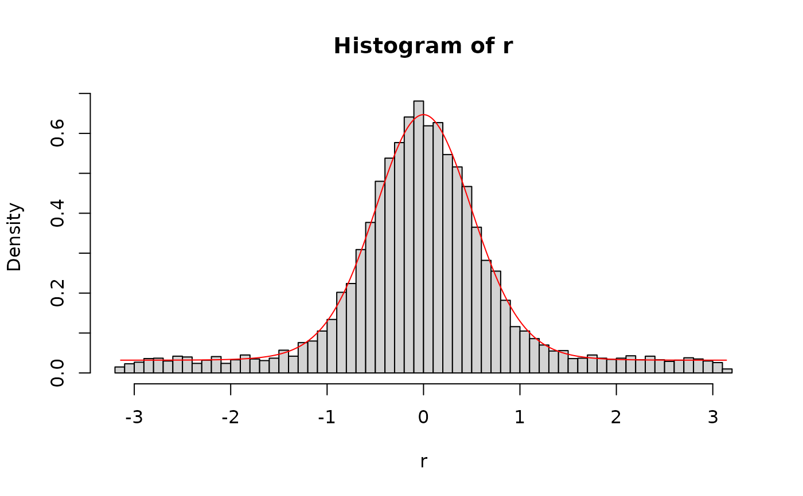

Distribution functions for the two-parameter mixture model (mixture2p)
Source:R/distributions.R
mixture2p_dist.RdDensity, distribution, and random generation functions for the
two-parameter mixture model with the location of mu, precision of memory
representations kappa and probability of recalling items from memory
p_mem.
Usage
dmixture2p(
x,
mu = 0,
kappa = 5,
p_mem = 0.6,
tau = 0,
K = 3,
set_size = NULL,
version = "simple",
vp_nodes = 81L,
log = FALSE
)
rmixture2p(
n,
mu = 0,
kappa = 5,
p_mem = 0.6,
tau = 0,
K = 3,
set_size = NULL,
version = "simple"
)Arguments
- x
Vector of observed responses
- mu
Vector of target locations, one per observation. Unlike
muofdmixture3p()anddimm(), it holds no non-targets.- kappa
Vector of precision values. With
tau > 0this is the concentration of the average trial, whose Fisher informationJ(kappa)is the mean ofJ.- p_mem
Vector of probabilities for memory recall, i.e.
thetatofmixture2p()on its native scale. Used by the"simple"version; the other versions derive it fromKandset_size, and warn ifp_memis given.- tau
Vector of scales for trial-to-trial variability in precision. The Fisher information
Jof a memory representation is drawn fromgamma(mean = J(kappa), scale = tau).tau = 0, the default, is constant precision.- K
Vector of memory capacities. Used by the
"slot"and"slot_averaging"versions;"simple"ignores it and warns if it is given.- set_size
Vector of set sizes. Required by the
"slot"and"slot_averaging"versions, which stop without it;"simple"ignores it and warns if it is given.- version
A character string selecting the storage model:
"simple","slot"or"slot_averaging". Seemixture2p().- vp_nodes
Number of quadrature nodes used when
tau > 0; must be an odd number of at least 41. Seemixture2p(). The random generation function needs no nodes: it drawsJfrom its gamma distribution and then the response, which is exact.- log
Logical; if
TRUE, values are returned on the log scale. Pass it by name: in bmm 1.4 it was the fifth argument, which is nowtau. Until bmm 1.6.0 a logical value in that position is still read aslog, with a warning.- n
Number of observations to generate data for
Value
dmixture2p gives the density of the two-parameter mixture model,
and rmixture2p gives the random generation function for the
two-parameter mixture model.
Vector arguments
r*(n, ...)returns exactlyndraws: a vector, or a data frame or matrix withnrows. Every per-observation argument (a parameter, a stimulus, a number of trials) is recycled to lengthnwithrep_len(), as instats::rnorm(): drawiuses elementi, and a matrix is read element by element; only a set of values per draw, such asthresholds, takes rowiof a matrix (see below). A shorter vector is repeated, also whennis not a multiple of its length. Until bmm 1.6.0 at the earliest,rddm()withn = 1and parameter vectors still returns one draw per element, with a deprecation warning.nis a single number of at least 0. A fraction is truncated, as instats::rnorm(), andn = 0gives an empty vector, or a matrix or data frame with zero rows and the usual columns. Unlikestats::rnorm(), which takes the length of a vectorn, these functions stop on one;rddm()still takes its length, with a deprecation warning.d*(x, ...)returns one value per observation: as many as the longest ofx(its rows, when the observations are rows of counts) and the per-observation arguments, the others recycled to that length. Valueiis what the call on thei-th elements alone returns. A matrix in an argument that takes one number per observation, such asxord, holds one observation per element, as instats::dnorm(). Whenxor any per-observation argument is empty, the result is empty, as instats::dnorm(). ANULLargument, such as a misspelt column of a data frame, counts as empty, except where the default isNULL, as forcriterionorkcrit: there it means that the argument is not given. Where an observation is a vector of counts (dsdt_rating(),dsdt_dpsdt(),dsdt_metad(),dsdt_ranking()anddsdt_cdp()), or the pair ofmean_rtorvar_rtvalues ofdezdm(version = "4par"), a vector is always one observation: pass a matrix with zero rows for none, as an empty vector stops. An emptykcritofdsdt_cdp()andrsdt_cdp()stops as well;kcrit = NULLgives the R/K model. Counts in a data frame, a tibble included, are read as the matrix of its rows, and so aremean_rtandvar_rtofdezdm(version = "4par").dsdm()with a data framexis the exception: it returns a data frame of the same shape, one density per cell, and cuts longer parameters to the number of cells.A set of values that describes one observation, such as the
thresholdsof the rating models or the item locationsmu(anddist) ofdmixture3p()anddimm(), is a vector when every observation shares it and a matrix with one row per observation otherwise: rowibelongs to observationi, or to drawi. Item locations are padded withNApast each row's set size, and a data frame of them is read as the matrix of its rows. As for counts, an empty vector of them stops: pass a matrix with zero rows for no observations.Configuration arguments such as
version,distof the ranking models,log,parametrizationandn_neware single values and are never recycled. An argument that a version does not use, such aszrofdezdm(version = "3par"), is ignored.
References
Zhang, W., & Luck, S. J. (2008). Discrete fixed-resolution representations in visual working memory. Nature, 453(7192), 233-235.
van den Berg, R., Shin, H., Chou, W.-C., George, R., & Ma, W. J. (2012). Variability in encoding precision accounts for visual short-term memory limitations. PNAS, 109(22), 8780-8785.
Examples
# generate random samples from the mixture2p model and overlay the density
r <- rmixture2p(10000, mu = 0, kappa = 4, p_mem = 0.8)
x <- seq(-pi, pi, length.out = 10000)
d <- dmixture2p(x, mu = 0, kappa = 4, p_mem = 0.8)
hist(r, breaks = 60, freq = FALSE)
lines(x, d, type = "l", col = "red")
